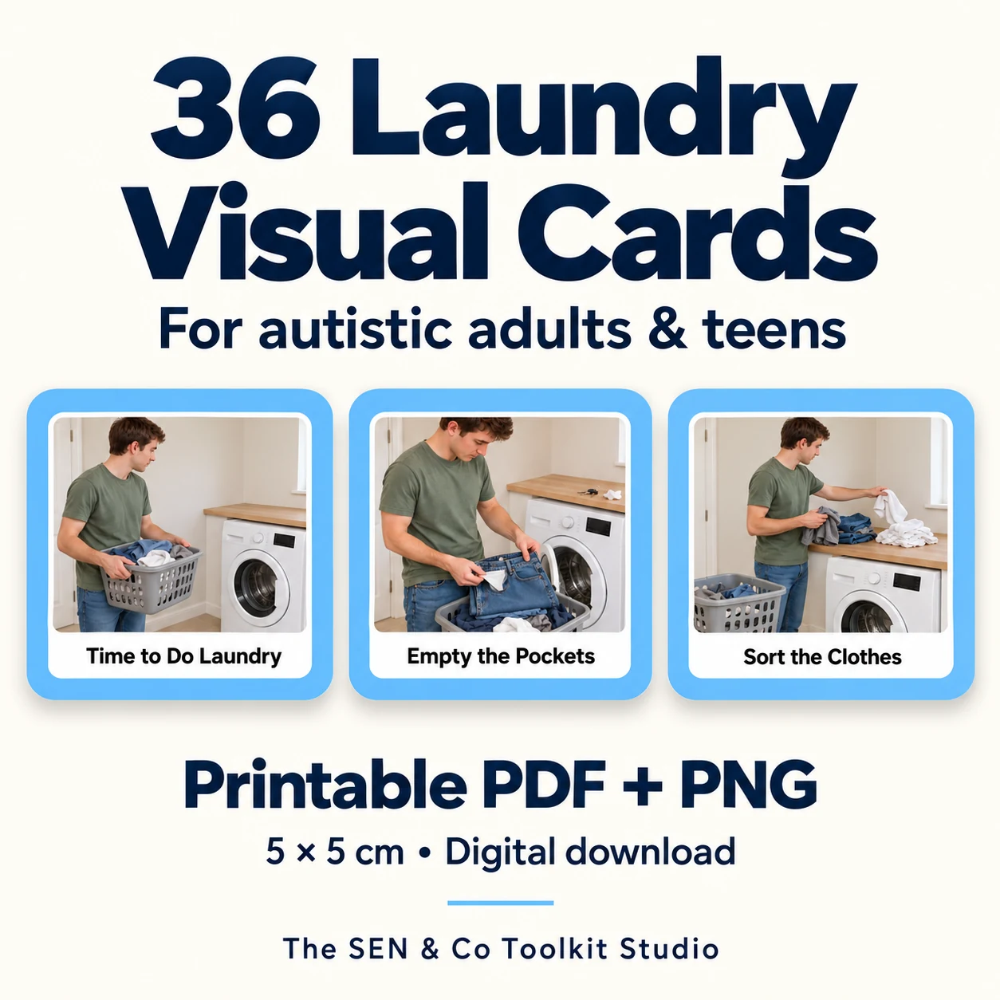

A clear place to start
Collect clothes, check care labels and pockets, sort, load the washer, add detergent and choose the wash programme.

Card previews and download details. Digital files only; no physical cards are shipped.
Image 1 of 7
VISUAL SCHEDULES & DAILY LIVING SKILLS
A clearer next step, from the laundry basket to putting clothes away.
US$6.99 Digital download
Build a laundry visual schedule that suits your routine. Clear action pictures show washing, drying and putting clothes away, with help and break communication cards to use throughout.
Ready to download
Buy now — US$6.99Continue to our Payhip checkout. After purchase, download all five files straight away and receive a download link by email.
Digital files only. No physical cards or accessories are shipped.
Created by me with the help of AI.
YOUR ROUTINE. YOUR PACE.
Choose a manageable selection, show one step at a time and keep communication within reach.
Collect clothes, check care labels and pockets, sort, load the washer, add detergent and choose the wash programme.
Use the air-drying cards or tumble-drying cards according to garment labels and your appliance instructions. These are alternatives, not 36 compulsory steps.
Fold and put clothes away. Use Ask for Help, Take a Break and All Done whenever they are useful.
Five files: a 5-page A4 card PDF, a 3-page welcome and user guide, and three ZIP folders containing all 36 numbered PNG cards. The guide includes printing and routine instructions, a thank-you and a polite request for an honest review.
Print the A4 PDF at 100% / Actual Size. Turn off Fit to Page and measure the first card. Cut around the rounded blue rim. When placing PNGs in your own layout, set both dimensions to 5 cm. Lamination is optional.
Select the cards that suit the person and your own laundry routine. Choose either air-drying or tumble-drying, rather than using both routes automatically. The numbered filenames provide an order; the cards have no printed step numbers.
Follow garment care labels, detergent directions and your own appliance instructions. Programmes, detergent amounts, waiting times and drying methods vary. Provide the individual support the person needs.
No. This is a digital download. You provide printing, optional lamination, mounting materials and laundry equipment.